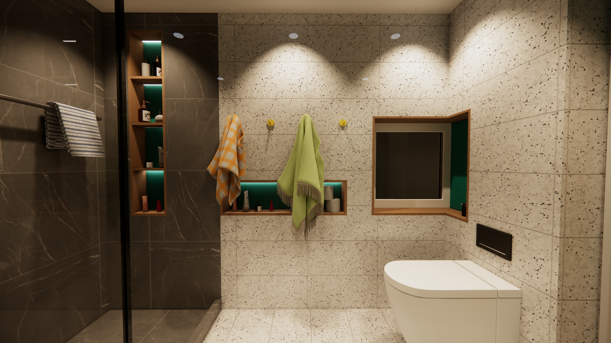
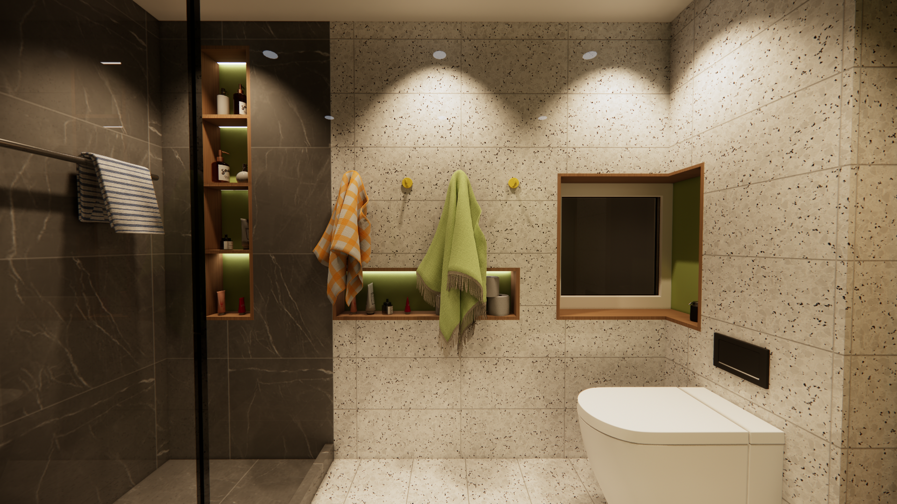
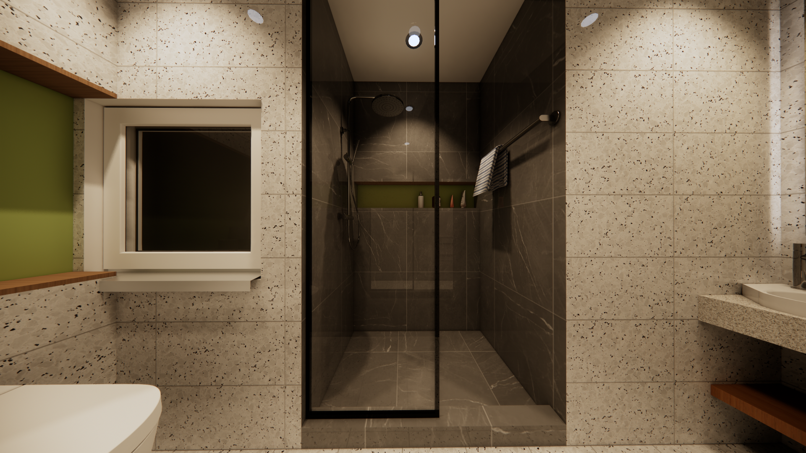
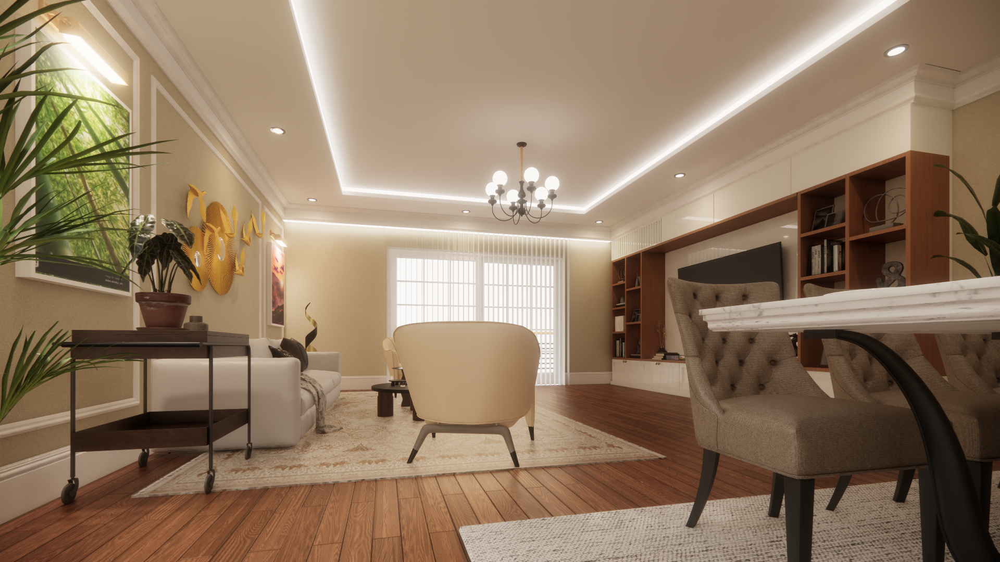
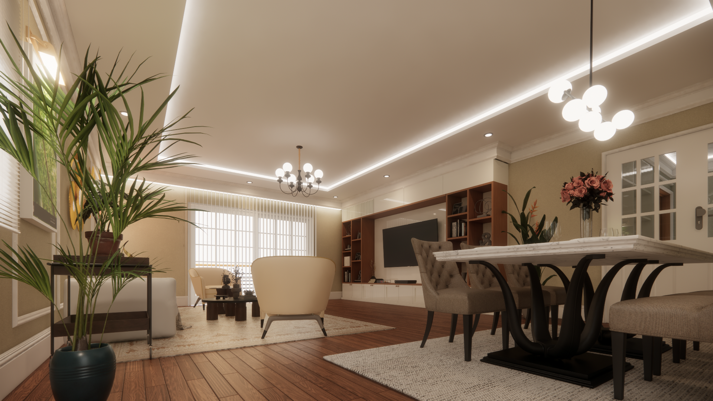

Raffinement au Cœur du Quartier d'Affaires
Situé au 15ème étage d'un immeuble résidentiel moderne à Bonanjo (Douala), ce projet porte sur l'aménagement intérieur complet d'un appartement de standing de 150 m². L'objectif principal était de concevoir un cadre de vie contemporain, fonctionnel et chaleureux, en parfaite harmonie avec les besoins d'un usage résidentiel urbain.
L'intervention a consisté en une redistribution fluide des volumes, privilégiant la lumière naturelle et la mise en valeur des vues panoramiques sur la ville. Le programme s'organise autour d'un vaste séjour baigné de lumière, une suite parentale optimisée avec salle de bain intégrée, et des espaces de nuit polyvalents, le tout magnifié par un choix rigoureux de matériaux et de solutions techniques modernes.




